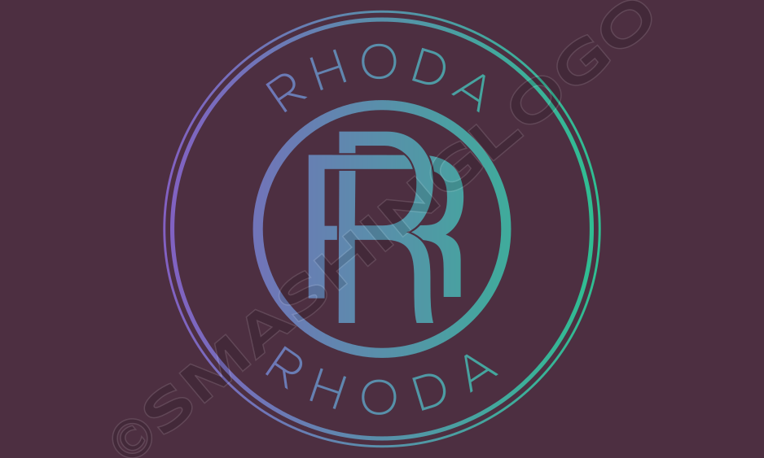

About Me
I'm a software engineerwho is very passionate about creating innovative solutions using technology.Currently I'm focused on building human-centered applications to bring innovation.
I consider myself to be innovative andcreatinve. And I believe technology and software development has the capacity to bring so much to the world.
My hobbies
- Horse Riding
- Travelling
- Reading
- Doing Yoga

My Spirit Animal
The polar bear is a sypmbol of power, perseerance, acceptance and commitment
Qualities and traits symbolized by polar bear as a spirit animal are:
- Brave
- Powerful
- Healer
- Clam